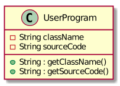

1. Project: Duke Academy
Duke Academy is a Java based programming practice application equipped with a wide range of questions related to the field of Data Structures and Algorithms.
2. Overview
Duke Academy was built to emulate a Command Line Application where users interact with the GUI by typing commands into a command box. This is to allow new learners to also familiarize themselves with using a Command Line Interface, an invaluable skill for all programmers.
Duke Academy is an integrated platform with a built-in text editor, an auto-grader and a note-taking feature.
DukeAcademy can also be used as a teaching tool by educators as they can set their own questions to be loaded by their students using our simplified text format.
3. My Roles and Contributions
The following segment illustrates the different roles and tasks that I have performed for our team in detail. It also provides a bit of justification for the different choices that I have made pertaining to these roles and tasks.
3.1. Change underlying architecture to suit our needs [refactor]
Due to the increased complexity of our product, a large part of the existing architecture of AddressBook3 had to be changed. Most of the changes can be summarized into the 3 following sections :
3.1.1. Separate Logic component
-
Split the old
Logicinterface in AddressBook3 into separate interfaces, each with their own specialized functions. -
The new interfaces are
CommandLogic,QuestionsLogic,ProgramSubmissionLogicandNotesLogic. -
Each interface facilitates operations pertaining to a different part of our application.
Justification :
-
Functionality of our application can be split into more cohesive components
-
Reduce coupling to make the codebase more testable and maintainable
3.1.2. Implemented Observer pattern
-
Created a new simple and lightweight observable class that can be customized using Java generics.
Justification :
-
Enable UI components to observe and reflect changes in the application state without introducing them as unnecessary dependencies.
-
JavaFX’s native Observable class was over-engineered for our use case.
3.1.3. Refactor Command pattern
-
Change the implementation of the Command pattern to be more flexible.
-
execute()no longer depends onModel. -
Parsing of command arguments is now handled by individual commands.
-
Open-closed principle is maintained by registering commands into
CommandLogicwith aSupplier. -
Supplieris in charge of injecting dependencies into the various commands.
Justification :
-
New commands no longer depend on
Modeland have their own dependencies. -
New commands require their own unique argument parsing logic.
3.2. Program evaluation feature [feature]
-
What it does :
Allows users' solutions to be automatically evaluated by our application. The solution is evaluated against test cases specified in theQuestionclass. -
Justification :
It is difficult to come up with your own test cases to evaluate your solutions whenever you attempt programming questions. It is also very cumbersome to run each test case manually. Allowing users to automatically have their solutions evaluated will allow them to focus more on their learning. -
Highlights :
-
Compile and runtime errors are also displayed to the user in the event that they occur so that users are able to learn from their mistakes.
-
A Time Limit Exceeded error is displayed if the user’s program takes too long to complete. This will allow users to know if their solutions are properly optimized.
-
3.3. Note-taking feature [feature]
-
What it does :
Allows users to record notes in the form of text or a simple sketch. -
Justification :
Being able to pen down ideas is extremely useful when coming up with solutions to programming questions. Furthermore, being able to take notes for future reference will help to reinforce our users' learning. -
Highlights :
In addition to taking notes in the form of text, user’s are also able to sketch their ideas within a a sketch pad and have them saved for future reference. This is particularly useful when dealing with data structures.
3.4. Tabs [feature]
-
What it does :
Splits the various functions of the application — browsing and viewing of questions, attempting of questions and evaluation of results, note-taking, into individual tabs. -
Justification :
Separating the various functions of our application into their own separate tabs will reduce clutter and enable users to be more organized in their learning. -
Highlights :
In line with the Command Line theme, the user is able to switch tabs by typing the command "tab" instead of using a mouse-click.
4. Other Contributions
-
Project management
-
Managed and enforced branching workflow on GitHub
-
Set up auto-publishing of docs (commit)
-
Managed releases
v1.3-v1.4on GitHub (2 releases)
-
-
Product design:
-
Updated the GUI layout and color scheme (Pull requests #112)
-
-
Documentation:
-
Testing:
-
Community:
-
Reported bugs and suggestions for other teams in the class (Liberry)
-
5. Code Contributions
Click the links below to view my code contributions on RepoSense. On RepoSense, you can select options to view my functional code and test code.
6. Contributions to the User Guide
Given below are some of the sections that I contributed to the User Guide. They showcase my ability to write documentation targeting end-users.
6.1. Workspace Tab
The workspace is where you will work on the various questions.
-
Problem Statement Display
Displays the question that you are currently attempting.
-
Program Evaluation Panel
This panel displays the correctness of your program when evaluated against the pre-defined list of test cases tied to the question you are solving.
-
Editor
A built-in editor for you to write your code.
-
To submit your attempt, enter
submitinto the CommandBox. -
To begin your attempt on a question, enter
attempt <Qn Index>into the CommandBox. -
To submit your attempt, enter
submitinto the CommandBox.
6.2. Notes Tab
The notes page is where you can record notes or even sketch out some of your ideas to aid your learning process.
-
NotesListDisplay
Displays all of the notes that you have previously created.
-
CurrentNoteTitle
Shows the title of the note that you are currently viewing/editing.
-
NoteTextInput
Input space for any text-based notes that you wish to record.
-
Sketchpad
A canvas for you to draw any ideas you may have pertaining to data structures!
-
To create a new note, enter
newnote <Title>into the CommandBox -
To open an exiting note, enter `opennote <Id> into the CommandBox.
-
The id of the note is the number that appears next to the title in the NotesListDisplay.
-
To save any changes to your notes, enter
savenoteinto the CommandBox.
6.3. Submitting your answer: submit
Submits your solution.​ Your code will be compiled and run against test cases. The results will be displayed in the ProgramEvaluationDisplay on the bottom left of the GUI.
Format: submit
7. Contributions to the Developer Guide
Given below are some of the sections I contributed to the Developer Guide. They showcase my ability to write technical documentation and the technical depth of my contributions to the project.
7.1. Logic components
7.1.1. Overview
There are 4 main logic components in the architecture of Duke Academy. They are CommandLogic, QuestionsLogic, ProgramSubmissionLogic and NotesLogic.
Each logic component serves as a facade for basic operations with regards to Commands, Questions, ProgramSubmission and Notes.
They orchestrate the execution of these operations internally and expose a simple interface for other components, such as the UI to utilize.
The logic components are interfaces so their implementation can be changed easily.
Class diagrams for various logic classes
CommandLogic:
-
Only has one method which is used by the application to execute commands.
QuestionsLogic:
-
Deals with all CRUD operations pertaining to the questions found in the application.
-
Keeps track a selected question which represents the
Questionthat is currently being viewed by the user.
ProgramSubmissionLogic:
-
Performs the evaluation of the user’s program submissions.
-
Keeps track of a currently attempting question which is used to test user program submissions.
-
Uses the
UserProgramChannelinterface to enable other components such as theUIto serve as a source forUserProgramwithout introducing them as dependencies.
NotesLogic:
-
Deals with all CRUD operations pertaining to the notes found in the application.
-
Uses the
NoteSubmissionChannelinterface to enable other components such as theUIto serve as a source for notes without introducing them as dependencies.
7.1.2. CommandLogic implementation
The standard implementation of the CommandLogic is the CommandLogicManager class.
Overview:
-
For commands to be parsed by
CommandLogic, they have to be registered withregisterCommand(). -
A
CommandSupplierand a command word is required to register aCommand -
A
Commandcan also be registered with aCommandFactory. -
When
executeCommand(commandText)is invoke,CommandLogicManagersearches all previously registered commands for the right one to execute. -
Storage of these keys and the parsing of the
commandTextargument is performed byCommandParser.
-
CommandSupplieris a functional interface that returns aCommand. -
Each
CommandSupplieris mapped to a command word -
This command word is used to search for the appropriate
Command -
CommandParsersplits the text input of the user into the command word and arguments. -
Each
Commandis responsible for parsing its own arguments. -
InvalidCommandArgumentExceptionis thrown if the arguments do not match the specification of the command.
The basic sequence of command execution is as follows:
-
Commandis registered upon startup by the application driver -
Commandand matching command word is stored inCommandParserbyCommandLogicManager -
User enters command text
-
Application driver passes the command text as String to
CommandLogicManager -
CommandLogicManagerpasses command text toCommandParserfor parsing andCommandretrieval -
CommandLogicManagerreceives and executesCommand
7.1.3. NotesLogic implementation
The standard implementation of the NotesLogic interface is the NotesLogicManager. It relies on SketchManager to handle loadiand saving of the Sketches.
It also stores the notes in the application in the form of a NoteBank. (View [Design-Storage] for more details.)
Overview:
-
Allows other components of the application to make changes to the current state of notes using its interface.
-
Other components of the application can also observe the current state of notes by getting an
ObservableListthroughgetAllNotesList()
-
NotesLogicManagerconstructor takes in aNoteBankStorageinstance which is used to load the initialQuestionBankand to save subsequent revisions to it. -
The main bulk of the CRUD operations are handled by the
NoteBankclass. -
NotesLogicManagersaves theNoteBankmethods along after each change -
NoteSubmissionChannelis required to provide a pair of values — aNoteand aWritableImageinstance to represent the user’s sketch.
SketchManager:
-
Handles the saving, loading and deleting of sketches.
-
Deals with sketches in two formats,
WritableImageclass used by the JavaFXUIcomponents for rendering the image, and png form in storage. -
Converts sketches between the two formats upon loading/before saving.
The basic sequence of saving a user’s note from a UI component is as follows:
-
Register the
UIcomponent as theNoteSubmissionChannel -
Invoke the
saveNoteFromSubmissionChannel()method -
Noteand sketch is retrieved from theNoteSubmissionChannel -
Noteis saved by theNoteBankStoragewhile the sketch is saved by theSketchManager
7.2. Evaluation of user program submissions
The evaluation of the user’s programs is facilitated by the testexecutor package.
7.2.1. Entry point
-
TestExecutorcontains a single methodrunTestCases(testCases, program)which evaluates aUserProgramagainst a list ofTestCase.
TestCase - stores an input and an expected value.
UserProgram - stores the name of the class which contains the main method along with the source code (note that the class name must match the source code for it to be evaluated successfully).
Class Diagrams for UserProgram and TestCase

-
The result of the program evaluation is returned as a
TestResultobject.
TestResult - encapsulates all possible outcomes of evaluating the user’s program. It is contains TestCaseResult and CompileError.
7.2.2. Implementation overview
The evaluation of a user’s program is done in 5 main steps, each handled by a specialized interface. The 5 steps include:
-
Create a Java file inside a temporary directory and write the source code into the file.
-
Compile the Java file. Catch and store any compile errors.
-
Execute the generated Class file and provide the inputs of the test cases.
-
Collect and store any output from the program.
-
Package the output, errors and results as a
TestResultinstance.
The 3 specialized interfaces used are CompilerEnvironment, Compiler and ProgramExecutor. They provided through dependency injection in the TestExecutor constructor.
TestExecutor acts as an orchestrator for the 3 interfaces.
CompilerEnvironment - in charge of creating a temporary folder in the user’s file system to create Java files.
This temporary folder is deleted in closed(). Uses JavaFile.
Compiler - in charge of compiling the Java files into Class files at a given file path. Uses ClassFile.
ProgramExecutor - in charge of executing the compiled Class files. Uses ProgramOutput.
Models classes:
-
JavaFile - contains the canonical name and class path of a Java file with various convenience methods. Note that the file must actually exist or an
FileNotFoundExceptionis thrown during instantiation. -
ClassFile - contains the canonical name and class path of a Java file with various convenience methods. Note that the file must actually exist or an
FileNotFoundExceptionis thrown during instantiation. -
ProgramInput - contains the String input to be fed into the user’s program.
-
ProgramOutput - contains the String output produced by the user’s program. It also contains convenience methods for producing different outputs.
The basic flow of a program evaluation is as follows:
-
TestExecutorcallsclearEnvironment()ofCompilerEnvironmentto remove any leftover files from previous program evaluations. -
TestExecutorcallscreateJavaFile()ofCompilerEnvironmentto create the Java file with the correct class name and source code. -
TestExecutorcallscompileJavaFile()ofCompilerto compile the newly created Java file. -
For each test case,
TestExecutorcallsexecuteProgramofStandardProgramExecutorwith the corresponding input to retrieve aCompletableFutureof the results. -
TestExecutorsets a timeout on theCompletableFutureand maps the result into aTestCaseResult. -
TestExecutorpackages all the errors and results into a singleTestResultinstance.
-
Note that if the evaluation
CompletableFutureasync task timesout before it is completed, an erroredTestCaseResultwith a "Time limit exceeded!" error message is returned instead. -
Compile errors and runtime errors will also be reflected in the
TestResultandTestCaseResultmodels respectively.
7.2.3. User interaction
In the application, the user’s interactions when submitting a program is as follows:
-
User submits program after typing it into the
EditorUI component. -
ProgramSubmissionLogicretrieves the program fromEditorand evaluates it against the currently attemptingQuestioninQuestionLogic. -
ProgramEvaluationPanelobserves the latestTestResultand reflects new result in the UI.
-
Editormust have been set as theUserProgramChannelinProgramSubmissionLogic. -
ProgramEvaluationPanelmust be observing the test resultObservableprovided byProgramSubmissionLogic. -
View [Logic-ProgramSubmissionLogic] for details about the sequence of events
7.2.4. Design considerations
Aspect : How the programs are run
| Alternative 1 : Use native Java packages and run the program locally (current choice) | Alternative 2 : Host an online server which receives user programs via HTTP requests |
|---|---|
Pro : No additional installation requirements is needed from the user |
Pro : Can support multiple languages |
Pro : No internet connection is required |
Pro : Scale of tests can be increased |
Pro : Easy to implement |
Pro : Reduce strain on user’s machine |
Con : Creates files in the user’s machine (dependent on memory/permissions) |
Con : Difficult to implement |
Con : Can only support the execution of Java programs |
Con : Dependent on internet |